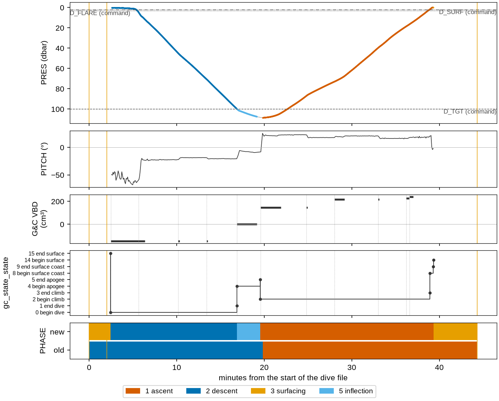
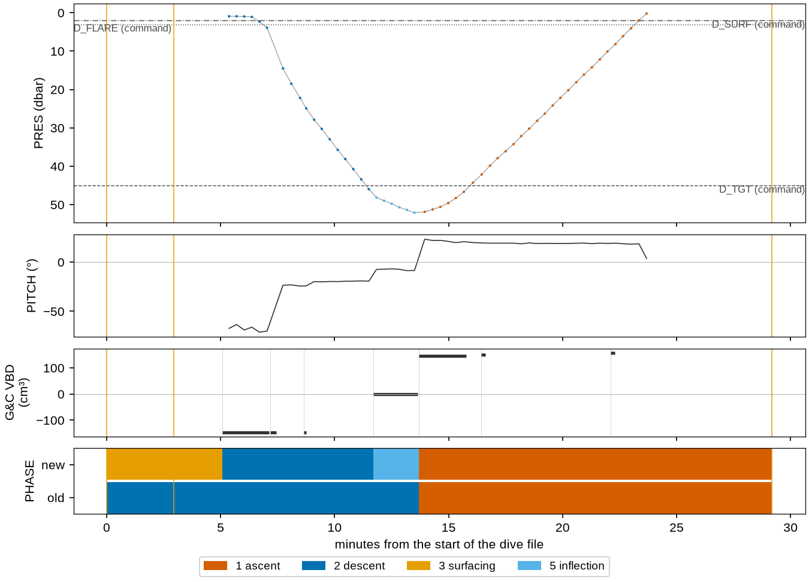
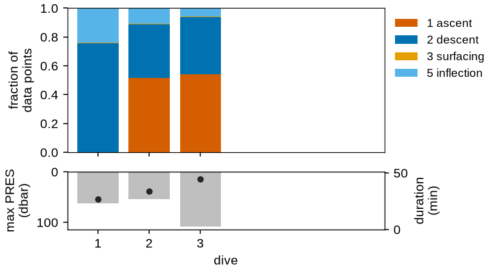
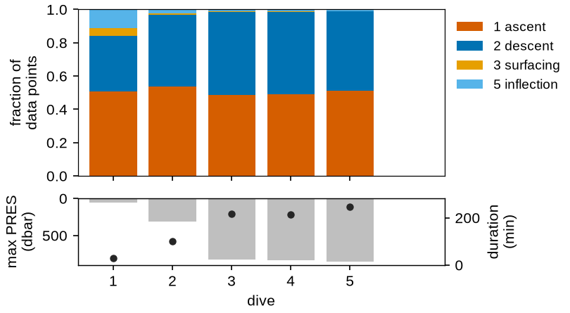
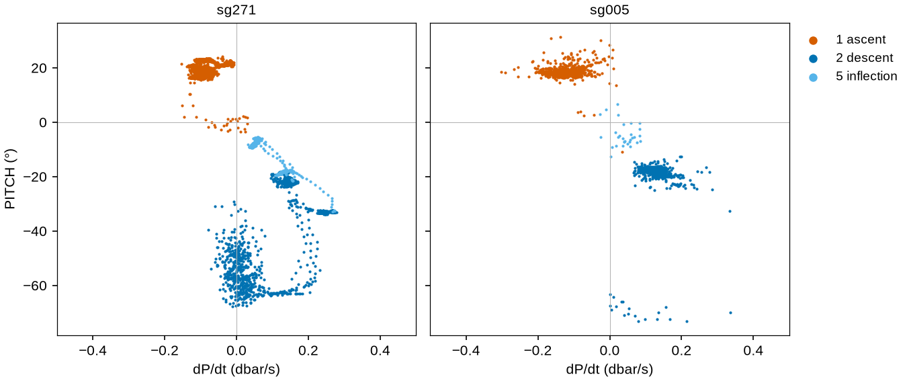

How the phase is assigned
PHASE says what the glider was doing at each sample, in the OG1 phase vocabulary.
The converter assigns it from what the Seaglider recorded it did — its state table and its
guidance-and-control (G&C) events — with GPS fixes for the surface and pressure as the last
fallback. This page states the algorithm, its fallbacks, and shows it on the bundled samples.
What a Seaglider dive looks like
A Seaglider repeats one cycle per dive file (SGX manual, §2.2.3 Run phases), and records
each stage in its state table (gc_state_state):
Seaglider stage |
what happens |
OG1 |
|---|---|---|
surface |
GPS fix, communications, a second GPS fix |
3 surfacing |
dive |
bleeds oil and sinks (nose down until |
2 descent |
apogee |
at the target depth, pitch to the apogee angle and VBD to zero |
5 inflection |
climb |
pumps oil, pitches up, rises to |
1 ascent |
surface coast |
above |
1 ascent (held) |
loiter |
held at a depth (when the pilot commands it) |
4 parking |
The CTD samples from the start of the dive to the end of the coast; the surface interval is
split between the dive file that ends with it (the fix on surfacing) and the next (the two
fixes before diving). PHASE 6 (propelled) and 7 (transition) are not assigned.
The algorithm
Per dive file, in this order.
Step 1, from the first of these signals the file has:
The state table (
gc_state_state; basestation 2.10 and later). The state names and numbers are the basestation’s own list, in begin/end pairs. The data points from a begin state to its end state take the phase the Seaglider column of the OG1 phase translation table specifies for that transition; the phase holds from the begin state until the next listed transition begins, and a pair the table does not list is ignored:pair
states
PHASEphase from
0 → 1
begin dive → end dive
2 descent
OG1 table
2 → 3
begin climb → end climb
1 ascent
OG1 table
4 → 5
begin apogee → end apogee
5 inflection
OG1 table
6 → 7
begin loiter → end loiter
4 parking
OG1 table
8 → 9
begin → end surface coast
no change (held)
not in the OG1 table
10 → 11
begin → end subsurface finish
5 inflection
OG1 table
12 → 13
begin → end recovery
no change (held)
not in the OG1 table
14 → 15
begin surface → end surface
3 surfacing
OG1 table
States written at the same second (end apogee and begin climb, for example) keep the order the file wrote them. A code with no name is logged as a WARNING. A begin state whose end state never comes runs to the end of the dive file, so a file cut off mid-dive keeps that phase to its end (sg271 dive 1 ends in the apogee, with end-of-phase code
ABORT_DEPTH_EXCEEDED).The surface coast (8, 9) and recovery (12, 13) are not listed in the OG1 table, so they are ignored: the phase before them holds (ascent, through the coast). Data points before the first named begin state take the phase of the first named end state (a file opens with “end surface”: surfacing). Data points still unset after step 2 take the phase of the data point before them. Basestation 2.10 files write 8 and 9 around the surface and no 14 or 15, so on those files the surface time is the GPS fix data points and what follows them.
The G&C events (
gc_st_secs,gc_end_secs,gc_vbd_ctl), for files with no state table (basestation 2.8). The inflection is the first G&C event that moves the VBD to zero after the dive’s bleed; descent before it, ascent after. Where a file has both, this event is where the state table’s apogee falls. Without a state table the coast cannot be seen, so it is ascent.Pressure, for files with neither: descent up to and including the pressure maximum, ascent after. No inflection is assigned.
Step 2 — GPS fixes. Every GPS fix data point is 3 (surfacing): a fix means the glider
is at the surface. The converter writes each fix as its own data points (TIME_GPS,
LATITUDE_GPS, LONGITUDE_GPS); the CTD does not sample at the surface, so these are
the only data points this step touches. It is the only way files without a state table get
surfacing, and it keeps the fix taken at the end of a dive cut off before “begin surface”
(sg271 dive 1) at the surface.
A sample no step claims is 0 (unknown). No piloting command is used: log_D_FLARE,
log_D_TGT, log_D_SURF and log_LOITER_* say what the glider was told to do, not
what it did, and are drawn on the figures for comparison only.
Discussed, not applied
Two uses of 7 (transition) were tried and are switched off, because the OG1 translation table gives Seaglider no transition. The code is kept, commented, for discussion:
the start of the dive: descent up to the last sample shallower than
$D_FLARE, while the glider bleeds at the surface nose-down before pitching to the dive angle. The last such sample, not the first deeper one, because a glider can sink past$D_FLAREand come back above it (one test dive went to 7 m and back to 3 m with$D_FLAREat 3 m);the bottom: ascent from “end apogee” to the deepest sample, while the glider pumps and pitches up but is still sinking (about half the sample dives reach their deepest sample after “end apogee”). A refinement would hold it until the rise rate first reaches the 25th percentile of the rise rates from the end of the apogee to the start of surfacing.
In the file
PHASE (byte, _FillValue 0) carries:
phase_vocabularyThe OG1 phase vocabulary (linked above).
flag_values,flag_meanings0 1 2 3 4 5 6 7andunknown ascent descent surfacing parking inflection propelled transition.phase_calculation_methodWhich signal assigned which dives, for example “From the glider’s state table (gc_state_state) on dives 1-3. Data points at GPS fix times are surfacing; …”.
phase_calculation_method_vocabularyEmpty: OG1 has no vocabulary for methods yet.
PHASE_QC is 0 (no QC performed) on every data point: the phase is not quality controlled. Its
flag_values are the OG1 scale 0–4. Two attributes differ from the OG1 table, and the
phase page marks both in amber: flag_meanings is written as CF words
(no_qc_performed good_data probably_good_data probably_bad_data bad_data) because the OG1
phrase cannot be paired with the five values, and no _FillValue is written because the
OG1 table’s " " is a string on a byte variable.
Profiles and segments
Three OG1 variables follow from PHASE, with the OG1 definitions written into each as its
*_calculation_method attribute:
PROFILE_NUMBER(_FillValue-9999)One number per run of descent (2) or ascent (1) data points, from 1, in time order. Every other data point — surfacing, inflection, parking, unknown — is -9999, so the apogee and the surface belong to no profile. On the samples, profile 2n-1 is dive n’s descent and 2n its ascent.
PROFILE_DIRECTION(byte,_FillValue0)1 on descent data points, -1 on ascent data points, 0 elsewhere.
SEGMENT_NUMBER(_FillValue-9999)1 from the first data point, +1 each time the glider enters surfacing: a segment is a surface interval and the dive after it.
dive_number is kept, in lower case because it is not an OG1 variable: it is the
Seaglider’s own dive number, from the basestation file (DIVE_NUMBER before 0.3.0).
In the report
seagliderOG1 process --report and seagliderOG1 report write a phase page,
<id>_phase.html, beside the conversion page, linked from its navigation. It is a page of
its own because how phase should be assigned is under discussion in the OceanGliders
community. It shows:
the file’s
phase_calculation_method, the algorithm as pseudocode, every state code with its phase and how often it appears in the file, and the variables the algorithm reads with whether the file has them;the data points and dives per phase;
the dive figure below (without the old/new comparison) for three dives: dive 2 (or 1), and one drawn from each of the middle and last thirds of the mission, at random but the same on every run;
every dive’s phase shares with its depth and duration, and pitch against dP/dt for the three dives.
The figures
Each dive figure shares one time axis: pressure, each sample colored by its PHASE, with
the commanded depths dashed; pitch; the G&C events’ VBD setting; the state table
(gc_state_state) as a step line, when the file has one (dotted lines mark the start of
each G&C event); and PHASE as a band, each color held until the next data point.
The CTD does not sample at the surface, so the yellow band at each end, with no pressure
samples under it, is time at the surface between GPS fixes: at the start, from the first fix
through the Iridium call to the second fix and the start of the dive; at the end, from the
last sample to the fix taken on surfacing. Here the band is
drawn twice: the algorithm above (new), and the rule converters before 0.3.0 used (old:
descent to the pressure maximum, ascent after). Vertical yellow lines are GPS fixes.
sg271 dive 3 (basestation 3.0.6, state table):

sg005 dive 1 (basestation 2.8, G&C events):

Every dive’s share of data points in each phase (top). Below, the dive’s maximum pressure (bars) and duration (dots), since a share means little without how deep and how long the dive was. Fewer than six dives are drawn in six slots.


Pitch against the rate of pressure change, colored by phase, every dive. Descent sits at negative pitch and positive dP/dt (i.e., increasing pressure), ascent at positive pitch and negative dP/dt; inflection lies between them. Descent data points at steep negative pitch with dP/dt near zero are the glider bleeding at the surface before the flare; ascent data points at positive pitch with dP/dt still positive are the glider still sinking after the apogee ends. Basestation 3 records pitch and pressure at different times, so sg271’s pitch is interpolated in time onto the pressure samples.

The figures are drawn by docs/generate_phase_figures.py on every docs build, with the
functions in seagliderOG1.reports.phase that the phase page uses.
Sources
SGX documentation 2024 v1.0, §2.2.3 Run phases, iop.apl.washington.edu.
Seaglider File Formats Manual: the
$STATEand$GClines of the log file.OG1 format: the
PHASEandPHASE_QCvariables.